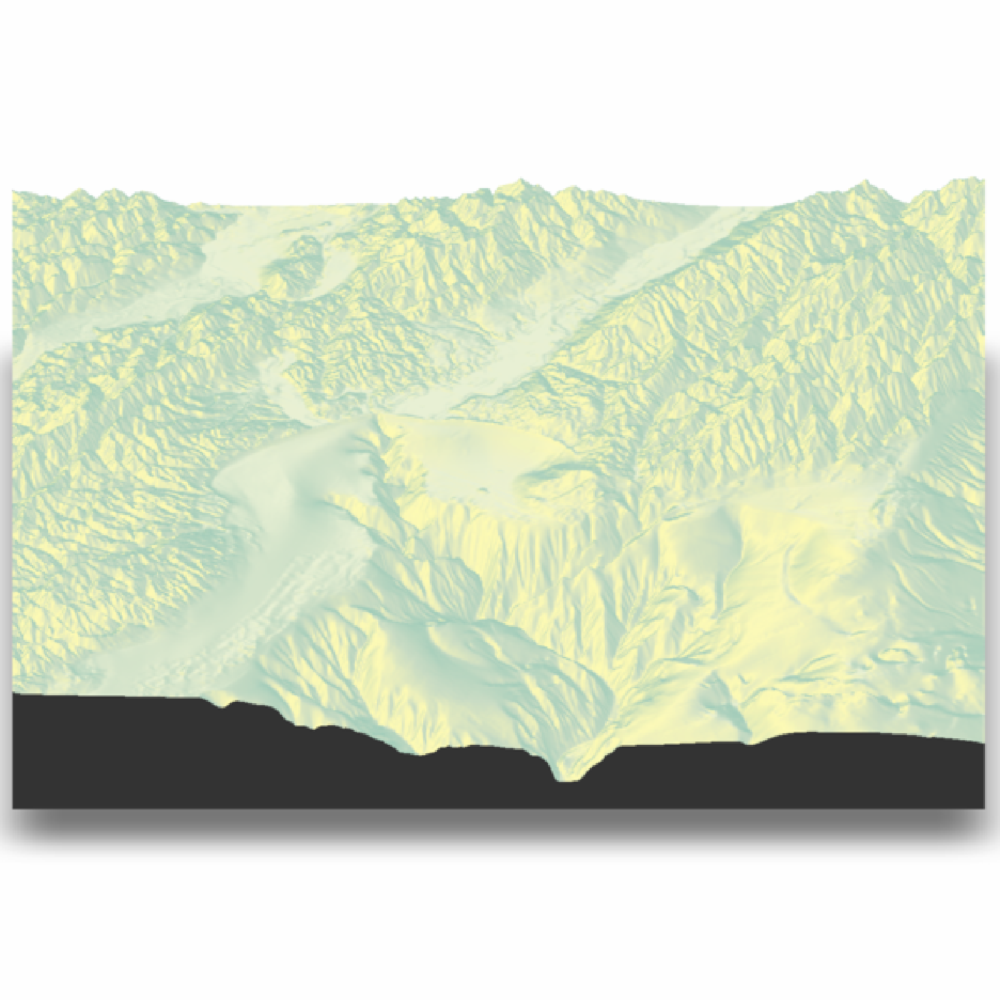

Either captures the current rgl view and displays, or saves the current view to disk.
render_snapshot(
filename,
clear = FALSE,
title_text = NULL,
title_offset = c(20, 20),
title_color = "black",
title_size = 30,
title_font = "sans",
title_bar_color = NULL,
title_bar_alpha = 0.5,
title_position = "northwest",
image_overlay = NULL,
vignette = FALSE,
vignette_color = "black",
vignette_radius = 1.3,
instant_capture = interactive(),
bring_to_front = FALSE,
keep_user_par = FALSE,
webshot = FALSE,
width = NULL,
height = NULL,
software_render = FALSE,
camera_location = NULL,
camera_lookat = c(0, 0, 0),
background = NULL,
text_angle = NULL,
text_size = 30,
text_offset = c(0, 0, 0),
point_radius = 2,
line_offset = 1e-07,
thick_lines = TRUE,
line_radius = 0.5,
cache_filename = NULL,
new_page = TRUE,
print_scene_info = FALSE,
fsaa = 1,
...
)Arguments
- filename
Filename of snapshot. If missing, will display to current device.
- clear
Default `FALSE`. If `TRUE`, the current `rgl` device will be cleared.
- title_text
Default `NULL`. Text. Adds a title to the image, using magick::image_annotate.
- title_offset
Default `c(20,20)`. Distance from the top-left (default, `gravity` direction in image_annotate) corner to offset the title.
- title_color
Default `black`. Font color.
- title_size
Default `30`. Font size in pixels.
- title_font
Default `sans`. String with font family such as "sans", "mono", "serif", "Times", "Helvetica", "Trebuchet", "Georgia", "Palatino" or "Comic Sans".
- title_bar_color
Default `NULL`. If a color, this will create a colored bar under the title.
- title_bar_alpha
Default `0.5`. Transparency of the title bar.
- title_position
Default `northwest`. Position of the title.
- image_overlay
Default `NULL`. Either a string indicating the location of a png image to overlay over the image (transparency included), or a 4-layer RGBA array. This image will be resized to the dimension of the image if it does not match exactly.
- vignette
Default `FALSE`. If `TRUE` or numeric, a camera vignetting effect will be added to the image. `1` is the darkest vignetting, while `0` is no vignetting. If vignette is a length-2 vector, the second entry will control the blurriness of the vignette effect.
- vignette_color
Default `"black"`. Color of the vignette.
- vignette_radius
Default `1.3`. Radius of the vignette, as a porportion of the image dimensions.
- instant_capture
Default `TRUE` if interactive, `FALSE` otherwise. If `FALSE`, a slight delay is added before taking the snapshot. This can help stop prevent rendering issues when running scripts.
- bring_to_front
Default `FALSE`. Whether to bring the window to the front when taking the snapshot.
- keep_user_par
Default `TRUE`. Whether to keep the user's `par()` settings. Set to `FALSE` if you want to set up a multi-pane plot (e.g. set `par(mfrow)`).
- webshot
Default `FALSE`. Set to `TRUE` to have rgl use the `webshot2` package to take images, which can be used when `rgl.useNULL = TRUE`.
- width
Default `NULL`. Optional argument to pass to `rgl::snapshot3d()` to specify the width when `software_render = TRUE`..
- height
Default `NULL`. Optional argument to pass to `rgl::snapshot3d()` to specify the height when `software_render = TRUE`.
- software_render
Default `FALSE`. If `TRUE`, rayshader will use the rayvertex package to render the snapshot, which is not constrained by the screen size or requires OpenGL. Consider settings a `cache_filename` so a new OBJ file doesn't have to be written with every snapshot.
- camera_location
Default `NULL`. Custom position of the camera. The `FOV`, `width`, and `height` arguments will still be derived from the rgl window.
- camera_lookat
Default `NULL`. Custom point at which the camera is directed. The `FOV`, `width`, and `height` arguments will still be derived from the rgl window.
- background
Default `NULL`, defaults to device background. Background color when `software_render = TRUE`.
- text_angle
Default `NULL`, which forces the text always to face the camera. If a single angle (degrees), will specify the absolute angle all the labels are facing. If three angles, this will specify all three orientations (relative to the x,y, and z axes) of the text labels.
- text_size
Default `30`. Height of the text.
- text_offset
Default `c(0,0,0)`. Offset to be applied to all text labels.
- point_radius
Default `2`. Radius of 3D points (rendered with `render_points()`.
- line_offset
Default `1e-7`. Small number indicating the offset in the scene to apply to lines if using software rendering. Increase this if your lines aren't showing up, or decrease it if lines are appearing through solid objects.
- thick_lines
Default `TRUE`. If `software_render = TRUE`, this will render path segments as thick cylinders. Otherwise, it will render the lines using a single-pixel anti-aliased line algorithm.
- line_radius
Default `0.5`. The radius of the thick cylinders if `thick_lines = TRUE` and `software_render = TRUE`.
- cache_filename
Default `NULL`. Name of temporary filename to store OBJ file, if the user does not want to rewrite the file each time.
- new_page
Default `TRUE`. Whether to call `grid::grid.newpage()` before plotting the image.
- print_scene_info
Default `FALSE`. If `TRUE`, it will print the position and lookat point of the camera.
- fsaa
Default `1`. Integer specifying the amount of anti-aliasing applied `software_render = TRUE`.
- ...
Additional parameters to pass to `rayvertex::rasterize_scene()`.
Value
Displays snapshot of current rgl plot (or saves to disk).
Examples
if(rayshader:::run_documentation()) {
montereybay %>%
sphere_shade() %>%
plot_3d(montereybay,zscale=50,zoom=0.6,theta=-90,phi=30)
}
if(rayshader:::run_documentation()) {
render_snapshot()
}

#Create a title
if(rayshader:::run_documentation()) {
render_snapshot(title_text = "Monterey Bay, California", title_offset=c(0,20),
title_color = "white", title_bar_color = "black",
title_font = "Helvetica", title_position = "north")
#Add a vignette effect
render_camera(zoom=0.8)
render_snapshot(title_text = "Monterey Bay, California",
title_color = "white", title_bar_color = "darkgreen",
vignette = TRUE, title_offset=c(0,20),
title_font = "Helvetica", title_position = "north")
rgl::close3d()
}